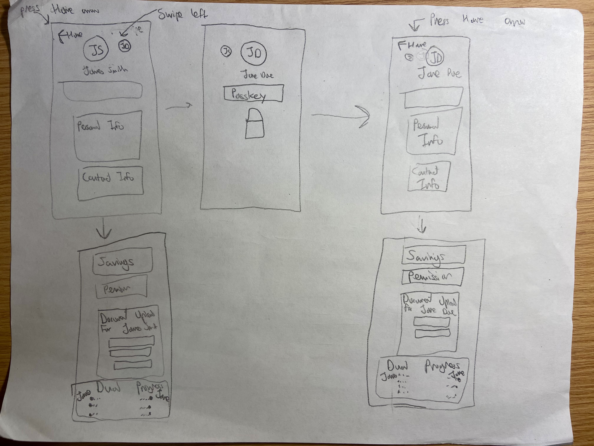
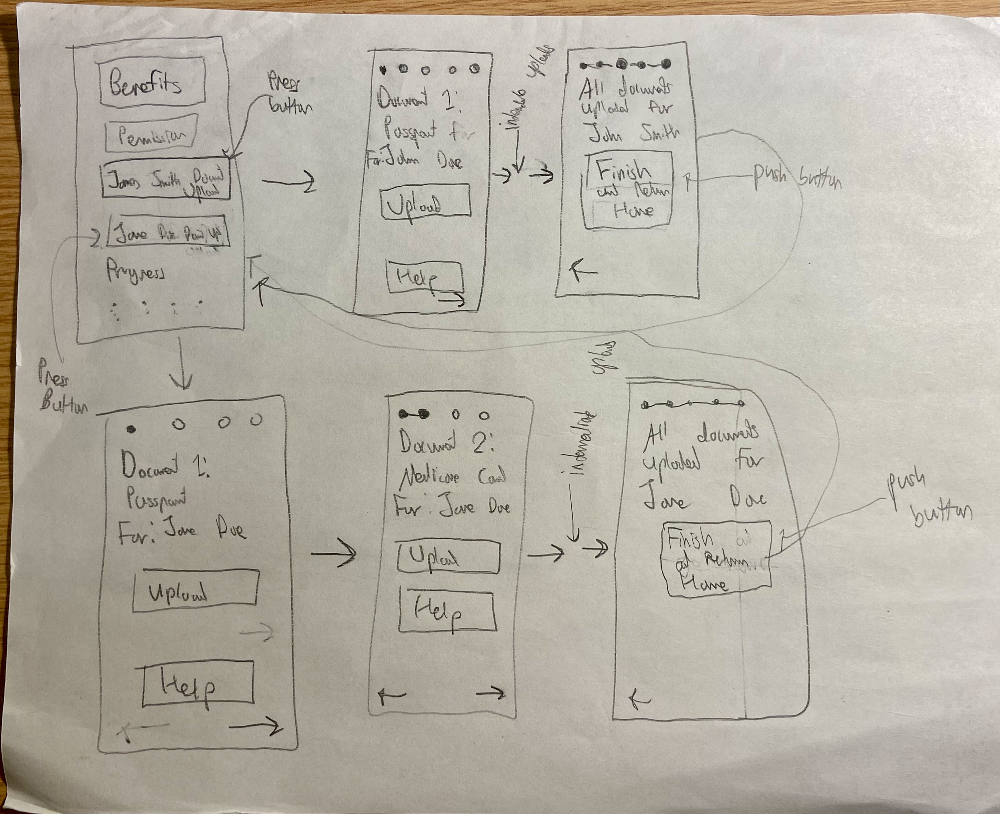
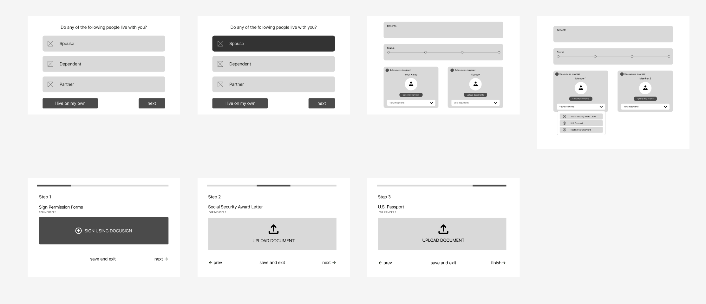
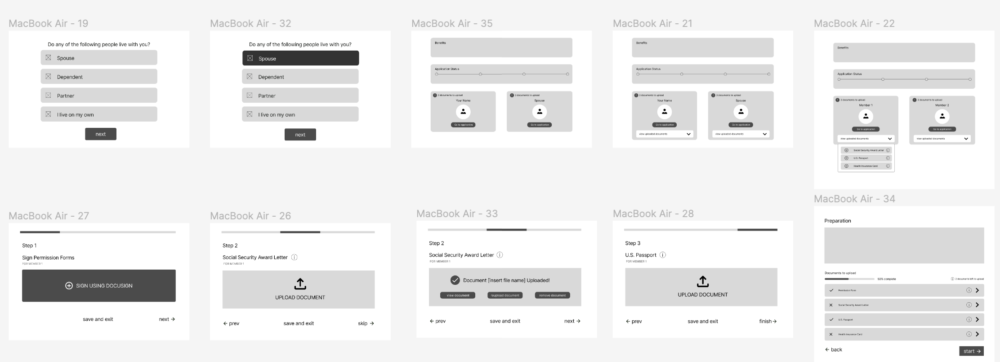

Iterative Design
Introduction and Context
In this project, I worked with a team of three others and had the opportunity to work with the startup Uno Health that focuses on making it easier for the elderly and others to get government benefits they are entitled to. We worked on redesigning their document upload experience for a household application (e.g., an individual and their spouse), and in the process made improvements to the homepage and eligibility check. This project showcases my ability do design in a problem solving focused manner as well as my ability to work effectively in a team.
Understanding the Brief and Sketching
The Problem
As Uno Health's website currently stands, if users were to complete the application process for them and their spouse, there currently exists many duplicate upload sites for the separate persons. This makes the interface slightly overwhelming, so we were tasked to come up with a design that would alleviate this issue. We aimed to make both the home page and the upload process easier to navigate. More details can be found in our project brief.
Sketches
 First Iteration Wireframing
Low-fi Wireframe: Iteration 1
 Here is the link to our Lo-Fi figma for a closer look.After brainstorming designs separately based on the brief, we then met up to discuss the merits of each of our designs. At the end, we took the format of the document upload box from Allison's design, the progress bar from David's design, the profile box from Pauline's design, and the document upload notification feature from Sophie's design. We also liked David and Pauline's idea of a linear flow of document uploads rather than a long list, so we incorporated that as well.
We took several aspects into consideration during our creation of the final design. First of all, we wanted to break up the document uploading process into multiple pages to avoid the overwhelming feeling of many documents on one page. We also liked the idea of grouping the documents by creating subprofiles for the primary user and the spouse to avoid confusion. We also included labels at the top of the page to indicate the current user that we were navigating through. For ease of navigation, we also allowed the user to upload documents in a non-linear flow by providing a dropdown for navigating to specific documents and also allowing users to skip documents.
Overall, we were paying closest attention to the ease of navigation and hiding the complexity of the original interface, and we believe that the creation of the linear flow behind a home page and a dropdown on the home page would do that for us.
Critique
Shortly after we created the first iteration wireframe, we made a demo video of our wireframe and then had a feedback session from other peers in the class. We also received feedback from Elise, our point of contact. Based on their feedback, it seems that we were able to accomplish our primary goals of eliminating complexity and providing ease of navigation, as they all praised the simplicity of our interface.
Peer Feedback
The largest piece of feedback that we received from our peers was regarding some slight confusion in differentiating interactive elements, specifically the fact that the "I live on my own" button was a completely different color. Another piece of feedback that they gave was that the interface was unclear in conveying behavior in unconventional settings. For example, what if a user hit "save and exit" when no document was uploaded? If "upload document" was clicked again, would this erase all of the documents or keep them (leading users to not act based on fear of wiping progress)? How do you add more documents or delete one document? These were all questions that arose during our critique.
Some additional, more minor peer notes included adding the ability for users to be able to view what was uploaded so they can double check that they completed the upload correctly and adjusting the overall design to make room for informational headers. A peer also suggested adjusting some of the sizing proportions on our page, specifically pointing us towards the document upload button and suggesting that it be made smaller. There was also a suggestion to make the different sections on the home page more visually distinct, and a suggestion to include info buttons to provide more context on the documents.
Feedback From Point of Contact
In terms of Elise, our point of contact, she said that we did a great job of hiding complexity, but we had hid it a bit too well. She said that a user may be taken off guard by having to upload a document that they did not come prepared with, so she suggested maybe having a landing page where all of the documents needed in the process were listed so the user could feel prepared. Additionally, she also brought up the idea of handling the edge cases of the document upload process, including skipping during the process when a user may not have a given document at the moment. Lastly, she also suggested being more clear about the intention of the dropdown button (whether it's for required vs. uploaded documents).
Updating Our Wireframe
Low-fi Wireframe: Iteration 2
 Here is the link to our second Lo-Fi figma for a closer look.Our wireframe went through several changes after the critique session, but the largest change was arguably the creation of the landing page (see below) after clicking into "Go to application" (previously "upload documents", changed to diminish fear of clicking on the button also based on peer feedback). This landing page essentially was a duplicate of the dropdown on the home page in a larger form and included clear labels indicating whether a document has been uploaded. We also added a numerical status bar, an indicator of how many documents were left, and a written description of how to navigate around the page in order to further assist users with the document uploading process. We also included info buttons next to each button to provide more context about each document if needed. We felt like this page complimented the simplicity of our linear sequence of uploads but also provided the user with more context, which was something our point of contact suggested.
In order to make the dropdown button on the home page more clear, we changed the label from "View documents" to "View uploaded documents" (see below) and made sure that the button only appears once the user has already uploaded at least one document, so that they would have more context on what the dropdown button is for.
Another change to the existing wireframe that we made based on peer feedback was to display uploaded documents on the individual document upload pages so that users could delete and add documents. Lastly, as told by at least three individuals during the peer review process, we changed the "I live on my own" button to fit in with the other options, and we also added info buttons to the documents.
We did not take the feedback to add more information to our document headers, as we felt like that would add too much complexity to the cleanliness of the site. We also did not completely adopt the feedback to change the look of the home page upon finishing the upload, but we did add a small icon to signify the completion of a profile. We also felt like we could add more visual distinction between sections in the hi-fi prototype, once we decided on colors and headers.
Lastly, we did not take the feedback on shrinking the size of our upload buttons, since our target audience should be Medicare members 60 years and older.
High Fidelity Prototyping
Style Guide
We were originally given a style guide by our client, which gave us the shades of the background yellow and the dark green components. We believe that they chose these colors to match with the color of their logo, but besides that, the dark green was always used on a button, so the designer probably wanted to choose a color with great contrast to the rest of the scheme (light colors) to signify clickability. There were also a lot of colors (purples, pinks, yellows), but we felt they used those for more branding purposes, as they stuck primarily to green in their pages. Additionally, we think that the typography was chosen because its round font made the page less formal and intimidating (which is the intention of this webpage) while still making it easy to read.
In our high-fidelity prototype, we mostly stuck to the color scheme and fonts given by the client, since the colors and fonts fit within the scheme of their webpage and were well-chosen for accessibility. However, there were several color schemes up for debate as well.

For example, our group had a small debate about the red color used to signify incompletion in our prototype. We were provided with a red color by the client's style guide, but when put in contrast with the yellow-white background, the red looked a bit more like an orange and did not have as much of a "warning" feeling. Therefore, we used a redder color for the incomplete documents.
Our group also talked about the colors of the labels and arrows of the preparation page. We made them different colors (the label was a darker shade of red or green, and the info button and arrow button was black) to signify the difference in clickability. Since the free version of Figma does not allow hover effects, this was our way of signifying clickability.
For icons, buttons, and other components, we stuck to the designs given to us in the example pages. However, we added a couple new colored icons and components (shown above) for purposes like warnings and successes, as we felt the color helped them stand out more.
Prototype
Structure-wise, our final Hi-Fi design was centered around the same principles as our Lo-Fi wireframe: spreading out the uploading process into multiple pages and creating multiple ways of interacting with the upload flow. We paid specific attention to making sure that users knew instinctively what to click on by highlighting specific buttons in dark green (moving on to the next document, starting the upload process, etc.) and changing the wording of some buttons as well ("go to application" instead of "upload documents"). We also separated sections with boxes to be consistent with the brand kit, but we used color to make interactive sections (like profiles and document list) stand out more.
Lastly, we also made sure that users had a way of retracting on actions if they accidentally clicked something or were not prepared (for example, we give the option to remove documents with a simple click of the x button, the ability to skip certain documents, and also the ability to save and exit halfway through the process).
Final Founder Feedback
Positve Feedback
One feature that Elise liked about our prootype included the list of documents on the preparation page, which would be beneficial to users who might want a checklist they can use to gather documents. She also liked the instructions on the preparation page, which reassured the user by telling them that they didn't need to have every document ready. She also liked the two entry points on the homepage because they might help prevent mixup between members.
Constructive Feedback
- One concern was the misuse of error state instead of empty state. Our prototype uses error states to communicate when a user hasn't uploaded something, but this is not due to an error, so there should be some default empty state. The error state should be reserved for documents that are not uploaded properly, or incorrect documents (which is something that is manually checked by the Uno team).
- Another concern was the upload pages. There's enough space to display some context about the document but our prototype stores everything in an info button. Also, we use the labels "Primary Member" and "Spouse," which can be more explicit if replaced with the names of users.
- In addition, Elise discussed the tradeoff between simplicity and flexibility.The linear sequence simplifies the upload process, so that should be the most obvious route to take. The other routes (allowing the user to navigate to a specific page) should be downplayed.
- Lastly, we talked about the purpose of the dropdown route. Since users might not expect to see a list of documents, and be able to navigate from the dropdown, this feature might not be discovered / used. It's also a puplicate route (similar to the preparation page), so it could be simplified to just how many documents need to be uploaded. It's ok if the user needs to click one extra button to see the same information.
Learnings and Reflections
A key way in which we improved our soft skills relating to design was
in our experience working as a team throughout the design process.
This gave us a chance to deal with disagreements that come up and to
work through design problems more explicitly, since we all had to be
on the same page about everything. Over the course of this project, we
developed a true understanding of the idea that "the first design is
never the best one."" Iteration based not only on our own cognitive
walkthroughs but also on direct feedback from others is critical, and
the integration of that feedback is perhaps even more important than
developing the initial design starting point.
On the more technical side of things, we significantly improved our
skills in Figma, including developing working prototypes that one can
click through. We also got experience using Loom and had practice in
making short videos that were able to concisely and clearly display
our work. All in all, we had a great experience working on this
project together, and look forward to continuing to develop our skills
in future endeavors.